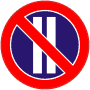
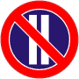
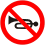
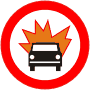
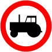
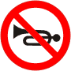
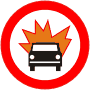
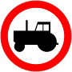

 





Oznacza zakaz postoju pojazdów w parzyste dni miesiąca; zakaz nie obowiązuje od godziny 21 do 24. Jeżeli zakaz wyrażony znakiem B-38 nie jest uprzednio odwołany przez taki sam znak z tabliczką T-25c, to obowiązuje do najbliższego skrzyżowania.